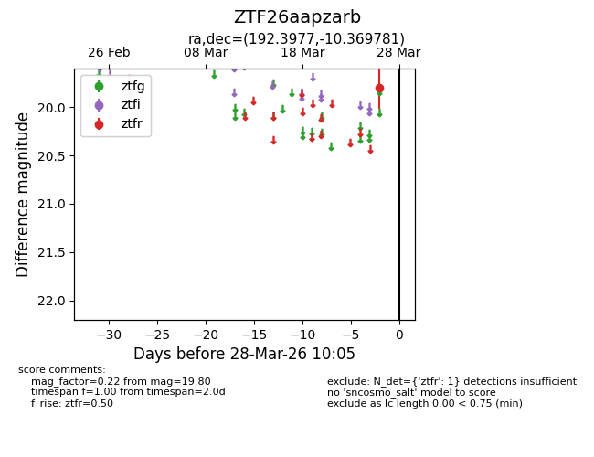
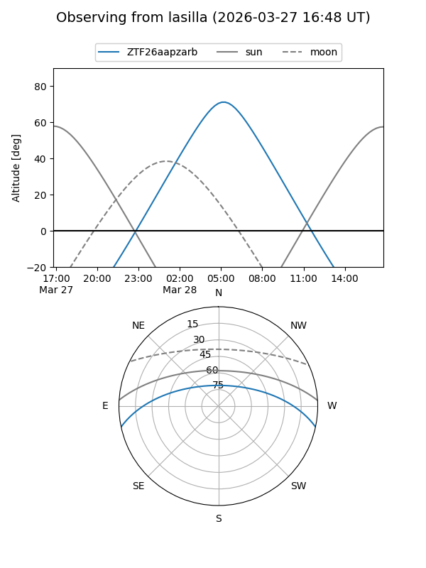
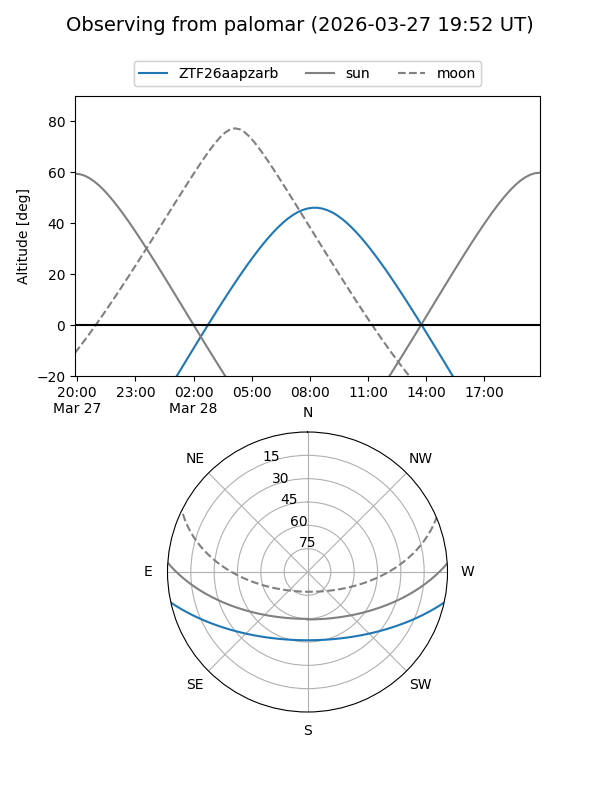

ZTF26aapzarb
Target ZTF26aapzarb at 2026-03-28 10:08
Aliases and brokers:
FINK: link
Lasair: link
ALeRCE: link
alt names
ZTF26aapzarb (ztf,fink_ztf)
Coordinates:
equatorial (ra, dec) = 192.3977,-10.36978
equatorial (HMS+DMS) = 12:49:35.46,-10:22:11.21
galactic (l, b) = (302.1858,+52.49929)
Flags:
Photometry:
last ztfr=19.80
1 ztfr detections
Lightcurve

Visibility


Additional plots